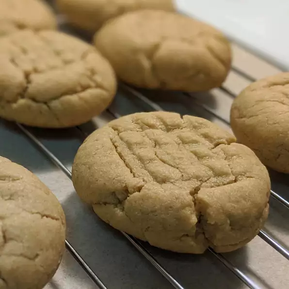

Peanut Butter Cookies

Ingredients
- 1¼ cups creamy peanut butter
- 1 cup margarine
- ¾ cup white sugar
- ¾ cup packed light brown sugar
- 2 eggs
- ½ teaspoon vanilla extract
- 2¼ cups all-purpose flour
- 1 teaspoon baking powder
- 1 teaspoon baking soda
Steps
- Preheat the oven to 375 degrees F (190 degrees C).
- In a large bowl, cream together the peanut butter, margarine, brown sugar and white sugar. Beat in the eggs and vanilla.
Combine the flour, baking powder and baking soda; stir into the peanut butter mixture.
Form dough into walnut sized balls and place them 2 inches apart onto ungreased cookie sheets.
Dip a fork into flour and criss cross each cookie to flatten slightly.
- Bake for 12 to 15 minutes in the preheated oven, until just lightly browned.
Allow cookies to cool on baking sheet for 5 minutes before removing to a wire rack to cool completely.